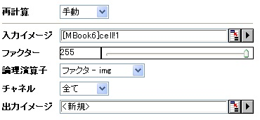

imgPixlog
メニュー情報
ピクセル論理演算
概要
ピクセル論理演算を実行します。
追加の情報
これはOriginProのみの機能です。
コマンドラインでの使用法
1. imgPixlog f:=128 func:=xor;
2. imgPixlog f:=120 func:=add c:=red;
3. imgPixlog f:=128 func:=abs oimg:=<new>;
変数
表示
名 |
変数
名 |
I/O
と
データ型 |
デフォルト
値 |
説明 |
| 入力イメージ |
img |
入力
Image
|
<active>
|
これは入力画像を指定します。デフォルトの入力はアクティブイメージです。
|
| ファクター |
f |
入力
int
|
255
|
論理演算子を指定します。デフォルトは255です。
|
| 論理演算子 |
func |
入力
int
|
Or
|
適用する論理関数を指定します。
オプションリスト
- and:And
- 各ピクセル値と因数をビット演算AND (&)します。
(pixel = pixel & factor)
- or:Or
- 各ピクセル値と因数をビット演算 OR (|)します。
- (pixel = pixel | factor)
- xor:Xor
- 各ピクセル値と因数をビット演算 XOR (^)します。
- (pixel = pixel ^ factor)
- add:img+ ファクタ
- 各ピクセル値に因数を追加し、結果をピクセルの最大値に固定します。
- (pixel = min(pixel + factor, MAX_PIXEL_VALUE) )
- subfi:ファクタ - img
- 因数から各ピクセル値を減算し、結果をピクセル範囲に固定します。
- (pixel = min(max(factor - pixel, MIN_PIXEL_VALUE), MAX_PIXEL_VALUE) )
- subif:img- ファクタ
- 各ピクセル値から因数を減算し、結果をピクセル範囲に固定します。
- (pixel = min(max(pixel ¨C factor), MIN_PIXEL_VALUE, MAX_PIXEL_VALUE) )
- abs:abs(img-ファクタ)
- 各ピクセル値と因数の差の絶対値を計算します。
- (pixel = abs(pixel ¨C factor))
- mul:img*ファクタ
- 各ピクセル値を因数の1/100で乗算します。
- (pixel = pixel * factor / 100)
- divif:img/ファクタ
- 各ピクセル値を因数の1/100で除算します。An error will be returned if factor is 0.
- (pixel = pixel * 100 / factor)
- divfi:ファクタ/img
- 各ピクセル値を因数で除算します。ピクセル値が0の場合、結果は最大ピクセル値にセットされます。
- (pixel = pixel ?min(factor / pixel, MAX_PIXEL_VALUE) : MAX_PIXEL_VALUE)
- avg:avg (img,factor)
- 各ピクセル値と因数の平均を使います。
- (pixel = (pixel+factor) / 2).
- min:min (img,factor)
- 各ピクセル値と因数のどちらか小さい方を使います。
- (pixel = min(pixel, factor) )
- max:max(img,factor)
- 各ピクセル値と因数のどちらか大きい方を使います。
- (pixel = max(pixel, factor) )
|
| チャネル |
c |
入力
int
|
すべて
|
関数を適用するカラーチャネルを指定します。デフォルトのチャネルはすべてです。
オプションリスト
- all:すべて
- すべてのチャネル
- red:赤
- Rチャネル
- green:緑
- Gチャネル
- blue:青
- Bチャネル
|
| 出力イメージ |
oimg |
出力
Image
|
<input>
|
出力画像を指定します。デフォルトで、入力画像と同じです。
|
説明
この関数は、画像ピクセルに指定した論理関数を適用します。画像のピクセル値をマッピングし直します。
サンプル
このサンプルでは、imgPixlog 関数を使って、255から画像のピクセル値を減算します。
- 新しい行列を作成し、\Samples\Image Processing and Analysisフォルダにある cell.jpg ファイルをインポートします。
- 入力画像をアクティブにして、「イメージ：算術演算：ピクセル論理」を選択します。これはXファンクションのダイアログを開きます。
- Xファンクションダイアログで、下の図のように設定を変更して、OK ボタンをクリックしてダイアログを閉じます。

新しい画像が結果として作成されます。
-
アルゴリズム
計算には、LEADTOOLS Main APIのL_ApplyMathLogicBitmap() を使用しています。詳細は、LEADTOOLS Main API Version 14 ヘルプファイルを参照し、トピックL_ApplyMathLogicBitmapを読んでください。
参考文献
LEADTOOLS Main API Help file, Version 14
関連のXファンクション
imgMathfun